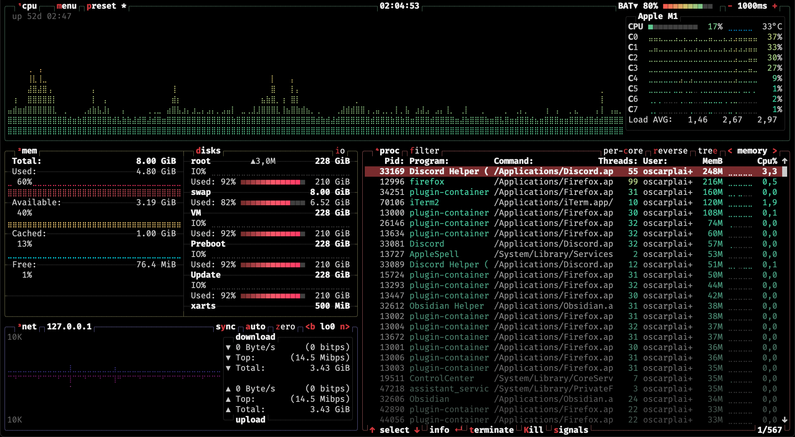

0SK42
A propos
Sujets
Mathématiques
Informatique
Philosophie
Réflexions
CV
github
youtube
email
flux RSS du blog
0SK42 - Tous les posts
Categories
All
(34)
aphorisme
(2)
apprendre
(1)
informatique
(13)
maths
(10)
news
(3)
philosophie
(1)
politique
(1)
réflexion
(4)
tips
(2)
vim
(2)
zététique
(1)
Ne pas avoir de valeurs
philosophie
Une argumentation à l’encontre des valeurs (morales).
Sep 26, 2024
qualification contre compétence
politique
réflexion
Une qualification est un
savoir-faire
: c’est le fait d’être capable de réaliser une mission donnée. On peut également faire rentrer les savoir théoriques dans la…
Sep 26, 2024
Je reprends mon blog !
news
Après 1 an, j’ai enfin retrouvé mon mot de passe.
Sep 25, 2024
Et si tout le monde saute d’un pont, tu le fais aussi ?
aphorisme
réflexion
Comment répondre aux gens énervants qui utilisent cette phrase.
Aug 10, 2023
texte étirable
réflexion
informatique
Réflexions sur un autre type d’hypertexte
Aug 8, 2023
comment mieux apprendre
apprendre
un guide plein de conseils pour vous aider à être efficace quand vous voulez apprendre une nouvelle qualification.
Aug 4, 2023
Oscar Plaisant, bucdany
Contre, l’usage, abusif, de la virgule, dans la notation, mathématique
maths
Pourquoi la virgule devrait être moins utilisée dans la notation mathématique.
Jul 23, 2023
Le langage APL
informatique
A propos de mon langage de programmation préféré
Mar 23, 2023
Pourquoi le Markdown est cool
informatique
Le markdown est une syntaxe qui permet de formatter du texte.
Mar 10, 2023
convertir des listes python en tables markdown
informatique
Un script python qui convertit une liste de liste en un tableau en syntaxe markdown.
Mar 10, 2023
algo avancee activite 4
informatique
correction détaillée
Mar 9, 2023
La girouette
Nous avons récemment repris l’association des étudiants en informatique. Mais comme elle à été abandonnée pendant 2 ans, il faut faire savoir que l’association existe encore !
Mar 9, 2023
algo avancee correction controle
informatique
correction détaillée
Mar 2, 2023
fonctionnelles
informatique
map, filter et reduce sur des listes chaînées
Mar 1, 2023
sauver une présentation avec la ligne de commande
informatique
Parfois, la ligne de commande sert dans des cas concrêts.
Feb 23, 2023

terminal - btop : statistiques des processus
informatique
Utilitaire ligne de commande pour visualiser les processus actifs et les statistiques.
Feb 20, 2023
permutations avec répétitions
maths
Nombre de façons de placer tous les éléments d’un ensemble dans un
\(n\)
-uplet.
Jan 21, 2023
Les langages de programmation que je préfère
informatique
Voici la liste des langages de programmation que je préfère (ou plutôt, la liste de ceux que je connaîs, par ordre de préférence).
Jan 20, 2023
Correction du TD 1 de probabilités (combinatoire)
maths
Un ascenseur dessert les 12 étages d’un immeuble. Au rez-de-chaussée, l’ascenseur est vide et 10 personnes y entrent. On suppose que personne ne monte dans l’ascenseur aux…
Jan 20, 2023
permutation
maths
Formellement, une permutation est une bijection d’un ensemble dans lui-même. Notamment, une permutation de
\(n\)
éléments est une bijection d’un ensemble de cardinal
\(n\)
da…
Jan 19, 2023
transposition
maths
Permutation qui n’échange que deux éléments.
Jan 19, 2023
Algorithmique avancée - activité 1
informatique
Correction détaillée de l’activité 1 d’algorithmique avancée.
Jan 15, 2023
Algorithmique avancée : activité 3
informatique
On dit qu’une liste est “bégayée” lorsque chaque élément y apparaît deux fois de suite. Le but de cet exercice est de transformer une liste en une liste bégayée, et…
Jan 13, 2023
Le dimanche, il pleut généralement à l’extérieur
aphorisme
zététique
réflexion
La phrase semble bizarre, parce qu’on a l’impression qu’elle sous-entend que, les autres jours, il pleut à l’intérieur (ou en tout cas, qu’il ne pleut pas à l’extérieur).
Jan 8, 2023
arrangements avec répétitions
maths
nombre de sacs à k éléments inclus dans un ensemble à n éléments
Jan 6, 2023
combinaisons avec répétitions
maths
C’est le nombre de sacs à
\(k\)
éléments inclus dans un ensemble à
\(n\)
éléments.
Jan 6, 2023
vim tips autocorriger les erreurs
vim
tips
Comment corriger rapidement des erreurs d’orthographe
Jan 5, 2023
vim tips - leader
vim
tips
présentation du raccourci <leader> dans vim
Jan 3, 2023
vim tips - tmux
informatique
Invalid Date
arrangements
maths
On définit
\(A_{n}^{k}\)
(lire “
\(A\)
,
\(n\)
,
\(k\)
”), les arrangements de
\(k\)
objets d’un ensemble de
\(n\)
objets, comme
le nombre de
\(k-uplets\)
d’éléments d’un…
Jan 5, 2023
combinaisons
maths
Nombre d’ensembles à
\(k\)
éléments contenus dans un ensemble à
\(n\)
éléments.
Jan 5, 2023
sacs (multi-ensembles)
maths
ensemble avec répétition
Jan 4, 2023
Pourquoi ce blog ?
news
Ce blog me permettra de partager des explications sur certains sujets, et des idées personnelles.
Jan 2, 2023
Bienvenue sur mon blog
news
J’ai enfin pris le temps de créer mon blog !
Jan 1, 2023
No matching items